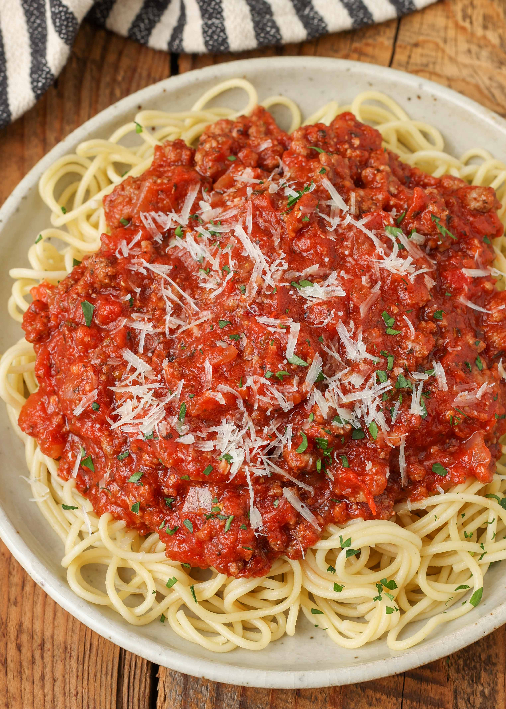

Ground Beef Spaghetti

Description
Restaurant-worthy spaghetti sauce with ground beef is just a few steps away.
You'll find the full recipe below, but here's a brief overview of what you can expect.
Ingredients
- 1 pound ground beef
- 1 medium onion, chopped
- 4 cloves garlic, minced
- 1 small green bell pepper, diced
- 1 (28 ounce) can diced tomatoes
- 1 (16 ounce) can tomato sauce
- 1 (6 ounce) can tomato paste
- 2 teaspoons dried oregano
- 2 teaspoons dried basil
- 1 teaspoon salt
- ½ teaspoon ground black pepper
Steps
- Gather all ingredients.
- Combine ground beef, onion, garlic, and green pepper in a large saucepan over medium-high heat. Cook and stir until meat is browned and crumbly and vegetables are tender, 5 to 7 minutes. Drain grease.
- Stir diced tomatoes, tomato sauce, and tomato paste into the pan. Season with oregano, basil, salt, and pepper. Simmer spaghetti sauce for 1 hour, stirring occasionally.
- Serve hot and enjoy!